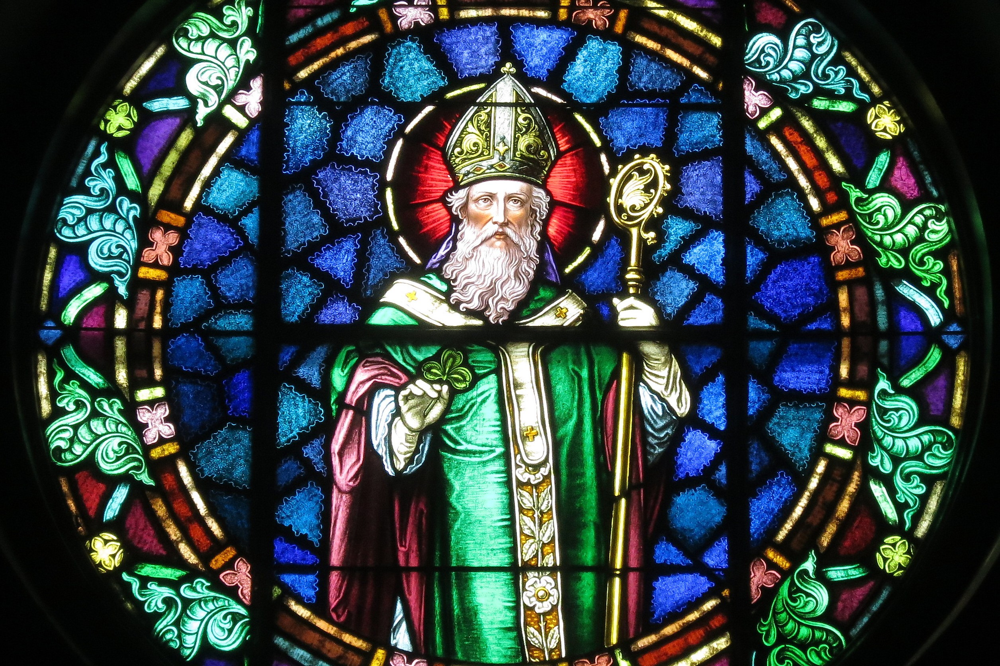

St Patrick's day in Dublin
Dublin city
The streets of the capital come alive with colour, performance, pageantry and spectacle in an unparalleled celebration of Ireland and of its people.

Parade
Dublin’s massive St Patrick’s Day parade draws more than half a million people onto the city’s main streets to watch the procession of colourful floats and troupes of performers.

Saint Patrick
Saint Patrick known as the "Apostle of Ireland", he is the primary patron saint of Ireland.

Temple Bar
Everywhere in the city will be busy this weekend but away from Temple Bar at least you won’t have to battle so hard to make your way to the bartender and you’ll see a lot more of Dublin.